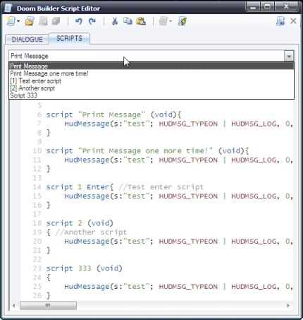

Thing and Linedef scripts can now be set much easier.
Notice: to remove named or regular script, clear script selector text box
Thing and Linedef scripts can now be set much easier.
Notice: to remove named or regular script, clear script selector text box
GZDoom Builder includes several features to help you edit and assign scripts easier. Script editor now has "Script names" drop down, which allows you to view and select individual scripts faster.
script 1 (void)
{ //My Pseudo-named script
...
}
it will be used as script name in "Script names" drop down and in Thing and Linedef Edit windows drop downs (example script will be named as "[1] My Pseudo-named script").
Notice: "Script names" drop down items are updated when you compile script successfully.
Thing and Linedef scripts can now be set much easier.
Notice: to remove named or regular script, clear script selector text box
 If a Thing or Linedef has named script, it will be shown in info panel.
If a Thing or Linedef has named script, it will be shown in info panel.